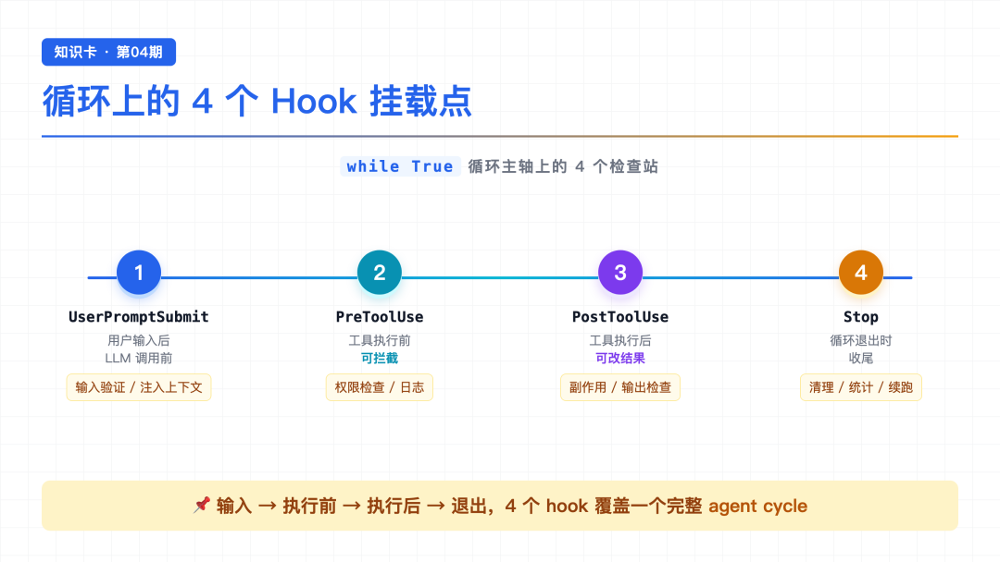
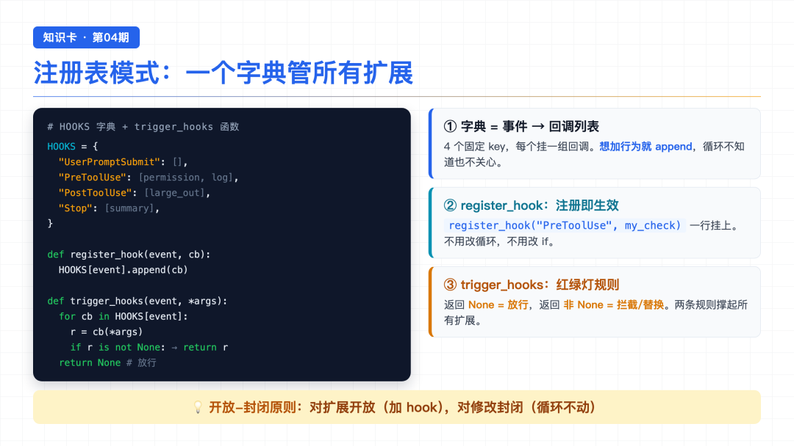
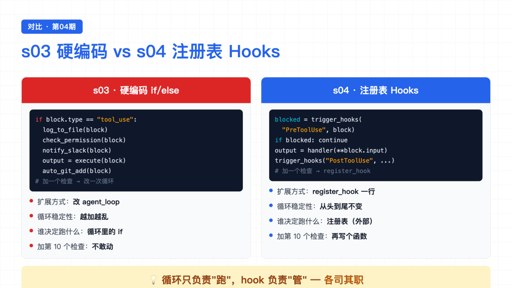
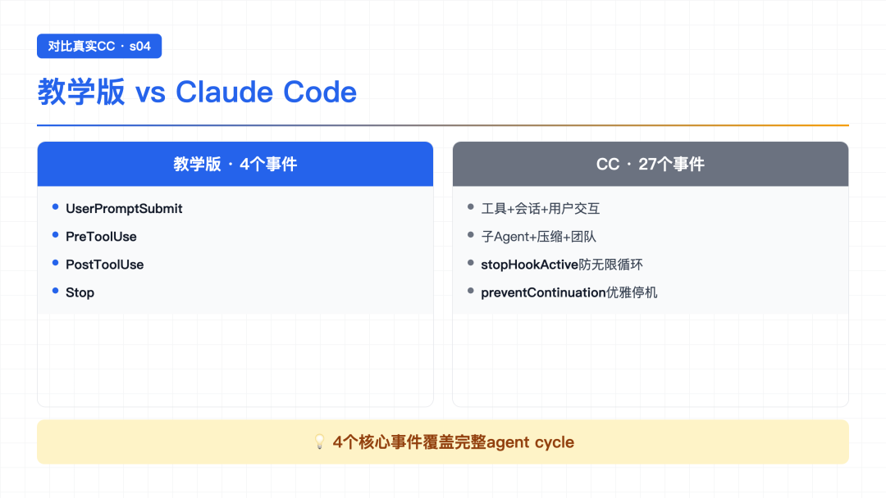

大家好，我是郑同学。周末赶紧多学学[旺柴]
上节 s03 读到结尾，作者留了个问题：权限检查硬编码在循环里，每加一个新检查都要改循环，越来越乱怎么办？
我读到这儿心里咯噔一下——s03 刚给 Agent 加了"先问问用户再删文件"的安全门，当时我还觉得这设计挺巧妙。但顺着作者的思路往下想：后面肯定还会加"记录每次 bash 调用"、"操作后自动 git add"、"大输出警告"……每加一个，就得再钻进 agent_loop 函数里塞一行 if。
加三个还行，加到第十个呢？循环还认得出吗？
带着这个问题往下读 s04，发现作者给的解法特别漂亮——让 Agent 能不断扩展，而循环本身一行不动。这一节就拆解这个解法。
● ● ●
s03 的循环已经长这样了：
def agent_loop(messages): while True: # ... LLM 调用 ... for block in response.content: if block.type == "tool_use": log_to_file(block) # 想记日志 → 加一行 check_permission(block) # 权限检查 → 加一行 notify_slack(block) # 想通知 Slack → 又加一行 output = execute(block) auto_git_add(block) # 想自动提交 → 再加一行 # ... 很快就认不出来了
这段代码能跑，功能也对。但问题藏在结构里：
你想扩展的是 Agent 的行为（记日志、提权限、通知、提交），但你改的却是 循环本身。
这就好比——你想给房子加个监控、加个门铃、加个感应灯，结果每加一样，都要去拆承重墙重新砌。墙越拆越补，最后没人敢动。
循环应该是稳定的核心，扩展应该挂在外面。
● ● ●

Hooks 4 个挂载点
思路一句话：挂在循环上，不写进循环里。
循环只认一个入口——trigger_hooks("事件名", ...)。具体要做什么检查、什么记录，全部写在"外面"的回调函数里。想加新行为？注册一个 hook 就行，循环一行不用改。
Hooks 在循环上有 4 个固定挂载点，覆盖一个完整的 agent 周期：
像在流水线上贴了 4 个"检查站"。货物（工具调用）经过每个站，站里的工人（hook 回调）可以做记录、可以放行、也可以喊停。
● ● ●

注册表模式
实现这套机制的核心，就是一个字典 + 一个函数：
HOOKS = { "UserPromptSubmit": [], "PreToolUse": [], "PostToolUse": [], "Stop": [], } def register_hook(event, callback): HOOKS[event].append(callback) def trigger_hooks(event, *args): for callback in HOOKS[event]: result = callback(*args) if result is not None: # 非 None = hook 说"停" return result return None
一个字典，四个 key，每个 key 对应一个回调列表。 想加新行为？register_hook("PreToolUse", my_check) 一行搞定，循环不知道也不关心。
trigger_hooks 的规则非常简单，是整个系统的"红绿灯"：
None → 放行（继续下一个 hook）None → 拦截/替换（立刻停下，把返回值交回去）就这两条规则，撑起了所有扩展逻辑。
● ● ●
s03 的循环里原本是这样硬编码的：
# s03：直接调用检查函数 if not check_permission(block): ...
s04 把它换成了：
# s04：交给 hook 注册表决定跑什么 blocked = trigger_hooks("PreToolUse", block) if blocked: results.append({"type": "tool_result", "tool_use_id": block.id, "content": str(blocked)}) continue
循环只负责"问一嘴"，具体查什么、拦什么，全在 hook 里。
同样的改动也发生在循环的另外几个挂载点上：用户输入后触发 UserPromptSubmit，工具执行完触发 PostToolUse，退出前触发 Stop。4 个 hook，串起一个完整周期：输入 → 执行前 → 执行后 → 退出。
● ● ●

s03 vs s04 对比
逐个看看每个挂载点上的典型 hook：
UserPromptSubmit——用户刚打完字、还没进 LLM。教学版只做日志：
def context_inject_hook(query): print(f"[HOOK] UserPromptSubmit: working in {WORKDIR}") return None # 返回 None = 放行
PreToolUse——工具执行前。s03 的权限检查逻辑整个搬过来，再挂一个日志：
def permission_hook(block): if block.name == "bash": for pattern in DENY_LIST: if pattern in block.input.get("command", ""): return "Permission denied by deny list" return None # 放行 def log_hook(block): print(f"[HOOK] {block.name}(...)") register_hook("PreToolUse", permission_hook) register_hook("PreToolUse", log_hook)
PostToolUse——工具执行后。比如大输出提醒：
def large_output_hook(block, output): if len(str(output)) > 100000: print(f"[HOOK] ⚠ Large output from {block.name}")
Stop——循环退出时。统计这次会话用了几次工具：
def summary_hook(messages): tool_count = sum(...) print(f"[HOOK] Stop: session used {tool_count} tool calls")
每个 hook 只管自己那点事，互相不干扰。想加新行为，写个函数 + register_hook 一行，循环完全不用动。
● ● ●
到这里原理部分就讲完了，但在跑 demo 之前，我想把 s04 的核心代码完整贴出来，把三块拼在一起串一遍——看看 Hooks 系统到底是怎么挂到循环上的。
完整核心就三块：字典（注册表）+ 函数（注册器）+ 函数（触发器）。
# ===== 第一块：注册表 ===== # 一个字典，key 是挂载点名字，value 是这个挂载点上的 hook 列表 HOOKS = { "UserPromptSubmit": [], "PreToolUse": [], "PostToolUse": [], "Stop": [], } # ===== 第二块：注册器 ===== # 往某个挂载点上加一个 hook 函数 def register_hook(trigger: str, callback): HOOKS[trigger].append(callback) # ===== 第三块：触发器 ===== # 在某个时机调用这个挂载点上所有 hook，收集它们的返回值 def trigger_hooks(trigger: str, *args) -> list: results = [] for callback in HOOKS[trigger]: result = callback(*args) results.append(result) return results
三块代码各自独立，但拼起来就是一个完整的 Hook 系统。逐块串一遍：
第一块——HOOKS 字典。这是整个系统的"骨架"，定义了四个挂载点。字典的 key 是固定的（四个时机），value 初始是空列表——一开始什么扩展都没有，循环就是干净的。
第二块——register_hook。往某个挂载点上加函数。比如 register_hook("PreToolUse", permission_hook) 就是把权限检查挂到"工具执行前"这个位置。注册是加法，不是改法——同一个挂载点可以挂多个 hook，按注册顺序执行。
第三块——trigger_hooks。这是循环唯一需要调用的函数。在某个时机调用，它会遍历那个挂载点上所有 hook，逐个执行，收集返回值。循环不知道有哪些 hook，也不关心，它只管调 trigger_hooks。
有了这三块，循环本体只在四个位置各加一行 trigger_hooks：
def agent_loop(messages): while True: # === 时机 1：用户输入后、LLM 调用前 === trigger_hooks("UserPromptSubmit", user_query) response = llm.create(messages, tools=TOOLS) for block in response.content: if block.type == "tool_use": # === 时机 2：工具执行前（可拦截） === pre = trigger_hooks("PreToolUse", block) if any(p is not None for p in pre): results.append({"content": "Permission denied."}) continue output = TOOL_HANDLERS[block.name](**block.input) # === 时机 3：工具执行后（可改结果） === trigger_hooks("PostToolUse", block, output) results.append(...) # === 时机 4：循环退出时 === if stop_reason != "tool_use": trigger_hooks("Stop", messages) return response
就这四行 trigger_hooks(...)。循环本身一个字没动——还是 s01 那个 while True，还是 s02 的查表分发，还是 s03 的权限拦截。所有扩展逻辑都在 HOOKS 字典里，循环只负责"在正确的时间喊一声"。
假设我想给 Agent 加三个能力：①每次用户提问打印当前目录；②工具执行前查权限；③工具执行后大输出警告。只需要：
# 第一步：写三个 hook 函数（纯函数，各自独立） def log_cwd(query): print(f"[log] cwd = {WORKDIR}") return None def check_perm(block): if block.name == "bash" and "rm -rf" in block.input.get("command", ""): return "blocked" return None def warn_large_output(block, output): if len(str(output)) > 100000: print(f"[warn] {block.name} 输出过大") # 第二步：挂到对应的挂载点 register_hook("UserPromptSubmit", log_cwd) register_hook("PreToolUse", check_perm) register_hook("PostToolUse", warn_large_output) # 第三步：没有第三步。启动 agent_loop 就行。 agent_loop(messages)
三个能力加完，agent_loop 函数一个字没改。这就是 Hooks 系统的威力——循环是骨架，hook 是肌肉，想加什么能力就挂什么 hook，骨架永远不动。
理解了这个拼装过程，下面看 demo 就知道每一行在干什么了。
● ● ●
光看代码没感觉，实际跑一下。
Demo 1：让 AI 执行一条 bash 命令
输入：
Run this command: echo hello
终端输出：
[HOOK] UserPromptSubmit: working in /private/tmp/claude-code-demo [HOOK] bash(['echo hello']) [HOOK] Stop: session used 1 tool calls
逐行翻译：
UserPromptSubmit hook 先冒头说一句"我在哪个目录工作"。echo hello，执行前 log_hook 记了一笔 bash(['echo hello'])。Stop hook 统计：这次一共用了 1 次工具调用。hook 像流水线上的打卡机，货物（工具调用）每过一站都"嘀"一声。
Demo 2：多个工具同时被记录
换一个稍微复杂点的任务，让模型多调几次工具：
输入：
Read the file readme.md
终端输出：
[HOOK] UserPromptSubmit: working in /private/tmp/claude-code-demo [HOOK] read_file(['/tmp/claude-code-demo/readme.md']) [HOOK] glob(['/tmp/claude-code-demo/**/*']) [HOOK] glob(['/tmp/claude-code-demo/readme.md']) [HOOK] Stop: session used 3 tool calls
这次模型一口气调了 3 次工具：先 read_file 读文件，又用 glob 搜了两遍目录。每一次工具调用，hook 都在前后留下了记录。 最后 Stop hook 汇总：3 次工具调用。
整个过程中，循环代码一行没改，只是注册的 hook 自动被触发了。
Demo 3：Stop hook 给会话算总账
最有意思的是 Stop 这个挂载点。它在循环即将退出时触发，打印一句：
[HOOK] Stop: session used 3 tool calls
这个数字是 hook 自己数的——它遍历整个 messages 历史，统计 tool_result 块的数量。循环本身根本不知道自己被调了多少次工具，是 hook 站在出口处帮它数的。
（在真实 Claude Code 里，Stop hook 还能做更狠的事：返回一个非 None 值，就能强制让循环继续跑——相当于"别停，再干点活"。教学版简化了，只做统计。）
● ● ●

为什么这样设计是对的
回头看 s03 vs s04：
这就是软件工程里经典的"开放-封闭原则"：对扩展开放，对修改封闭。
你想加新功能？可以，写个 hook 挂上去。但循环这个核心？别动它。
循环负责"跑"，hook 负责"管"。各司其职，谁也不踩谁。
● ● ●
读完 s04，我自己最大的感悟是——好的架构不是"功能多"，而是"加功能容易"。
作者把 s01~s03 讲下来，循环的核心一直是那个 while True，从来没变过。s02 把工具执行换成查表，s03 在执行前加了权限检查，s04 又把权限检查拆出来挂到 Hooks 上——每一步都是在"往外挪"，把变化的部分从循环里搬出去，留在循环里的只有最纯粹的骨架。
几个关键点回顾：
HOOKS 字典 + trigger_hooks() 函数None = 放行，返回非 None = 拦截/替换trigger_hooks()，具体逻辑全在 hook 回调里——开放扩展，封闭核心读到这儿回头看，s01 那 30 行核心循环之所以经久耐用，就是因为作者一开始就把它设计成"只管骨架，不管细节"。这是值得反复品的设计哲学。
● ● ●
现在 Agent 会记日志、会拦危险操作、会算总账了。看起来挺靠谱。
但跑个复杂任务试试——比如"重构这个模块的三个文件，先备份再改，最后跑测试"。你会发现：AI 根本不列计划。 它调一两个工具就开始动手，做到一半忘了要备份，改完忘了跑测试，整个流程东一榔头西一棒子。
hook 能在工具调用前后插逻辑，但插不进一个"整体计划"。AI 做事没规划，做着做着就跑偏了，怎么办？
下一节 s05 讲 TodoWrite——给 Agent 一个专门用来"列清单"的工具。先列计划，再做。
源码地址：https://github.com/agentkit-store/learn-claude-code/tree/main/s04_hooks